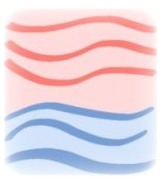

Feng Shui - definition
Feng is Qi (energy) that flows above the ground and occupies every space there is, it flows as wind, and is fast moving. It's characteristics are dependent upon the direction in which it flows and the environment it occupies. It can be partially described as electromagnetically charged particles in the atmosphere. Shui is Qi (energy) that is contained within the earth and is inherent in the structure of a building (all mass), it is slow moving. Shui can be experienced as a cool blue energy, hence being called water, it is essentially gravitational force. The practice of Feng Shui aims to balance these energies to benefit the occupant/s. It is a system of assessing the quality of energies at play and calculating how they interact.

Application
A magnetic compass (Lo Pan) is used to determine site/space orientation, the relevant energies at play and how they interact. Qi (energy) has different characteristics Dependant upon direction. ( please refer to the 8 Directions section of this site for details). Assessment is based on orientation, a personal reading and other general observations which are outlined below.

Assessment
An assessment of the site begins outside and works inwards. Consider the macro (large) environment first and work your way down to the micro (small).